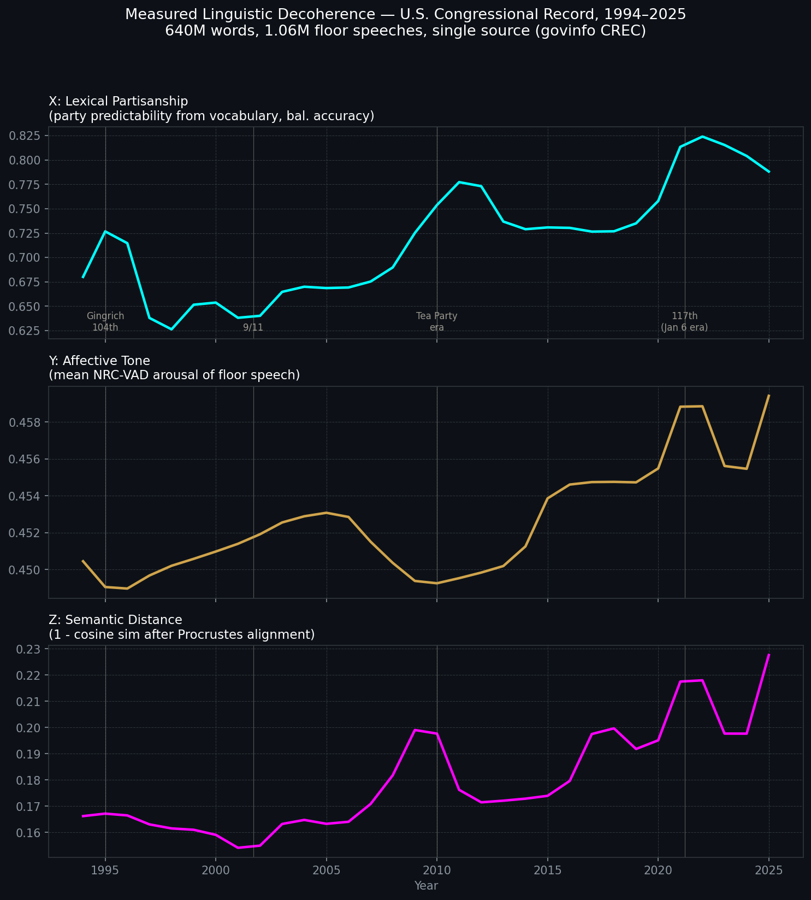

The Z-Axis, Intuitively
To intuitively grasp the Z-axis in this plot, it helps to think geometrically about how meaning fundamentally drifts within a semantic space.

The Z-axis tracks Semantic Distance, specifically formulated as 1 − cos(θ) after a Procrustes alignment. Here is the intuitive breakdown of what that actually measures within natural language processing pipelines:
1. The Disconnected Manifolds
When you train word embeddings on different groups (e.g., Democrats vs. Republicans) or across different time periods, the models place words into high-dimensional coordinate systems where proximity equals semantic similarity. However, the exact coordinates are arbitrary. The “Democrat” vector space and the “Republican” vector space are entirely disconnected manifolds; you cannot simply lay one on top of the other to compare how they use a specific word.
2. Procrustes Alignment (The Rotation)
To compare them, you have to mathematically force the two spaces to align. Imagine taking two identical constellations of stars, but one is rotated and translated. A Procrustes alignment rigidly rotates, scales, and shifts one semantic space to best overlap with the other. It usually anchors this alignment using “stable” structural words whose meanings rarely change (like “the”, “and”, or “water”).
3. Cosine Similarity (The Angle)
Once the baseline architectures of the two languages are aligned, you can measure specific concepts. If you draw a vector from the origin to how Group A uses the word “freedom,” and another vector to how Group B uses “freedom,” cosine similarity measures the angle between those two vectors.
- If they use the word in the exact same contextual way, the vectors point in the same direction (a similarity of 1).
- If the contexts are completely orthogonal or unrelated, the similarity drops toward 0.
The Z-Axis: Linguistic Decoherence
Because the Z-axis plots 1 − cosine similarity, it is an exact measure of divergence.
When the Z-axis spikes (as seen clearly around the 2010 Tea Party era and the post-2020 117th Congress), it reveals that the two sides aren’t just using different vocabularies (which is what the X-axis measures). Instead, it shows that even after aligning their baseline languages, they are using the exact same words to mean entirely different things. The topological distance between their shared concepts is widening, indicating that the speakers are effectively talking past each other.